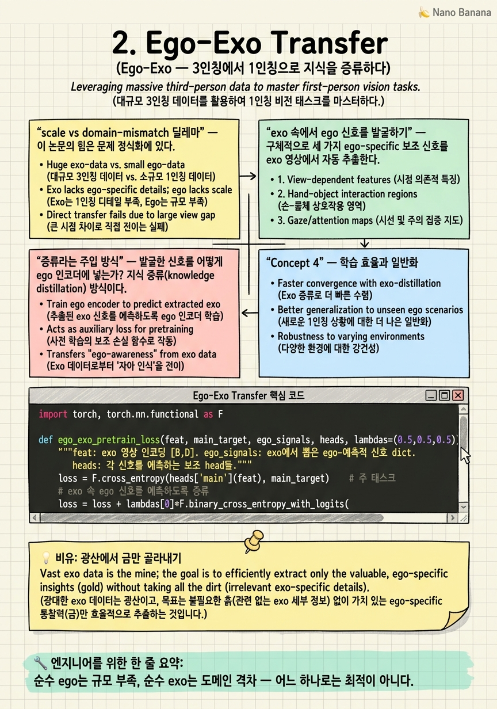

Ego-Exo Transfer
exo 영상 수백만 개가 창고에 쌓여 있다. 하지만 그대로는 1인칭 모델에 독이다. 이 풍요를 어떻게 '1인칭스럽게' 정제할 것인가?

🎯 학습 목표
- scale vs domain-mismatch 딜레마를 정확히 진술한다
- exo 영상에서 ego-specific 신호를 발굴하는 아이디어를 이해한다
- 지식 증류(distillation)를 사전학습 보조손실로 쓰는 구조를 안다
- 1장의 임베딩 정렬과 2장의 증류가 어떻게 다른지 구분한다
- 단방향·사전학습 한정이라는 한계를 설명한다
1장이 "두 시점을 같은 공간에 놓자"였다면, Ego-Exo(CVPR 2021)는 한 걸음 더 실용적인 질문을 던진다 — exo의 무엇을 ego로 옮겨야 하는가?
문제를 딜레마로 정식화한다. 순수 ego 데이터로 학습하면 규모와 다양성이 부족하고, 순수 exo 데이터로 학습하면 도메인 격차가 크다. 둘 중 하나만으로는 최고 성능이 안 나온다. 두 세계의 장점만 취할 방법이 필요하다.
Ego-Exo의 답은 우아하다. exo 영상을 ego로 변환하려 애쓰는 대신, exo 영상 안에 이미 존재하는 '1인칭적 단서'를 발굴한다. 3인칭 영상에도 "지금 누가 무엇에 주목하는가", "손이 어떤 객체와 상호작용하는가" 같은 신호가 암묵적으로 담겨 있다. 이 신호들을 뽑아, ego 인코더를 사전학습할 때 증류(distillation) 손실로 주입한다. 결과적으로 exo의 규모를 쓰되 ego에 필요한 것만 정제해 넣는다.
핵심 내용
scale vs domain-mismatch 딜레마
이 논문의 힘은 문제 정식화에 있다. 두 축을 놓고 보자.
| 데이터 | 장점 | 치명적 약점 |
|---|---|---|
| 순수 ego | 태스크에 완벽히 부합 | 규모·다양성 부족 |
| 순수 exo | 규모·다양성 풍부 | 도메인 격차 큼 |
어느 한쪽도 단독으로는 최적이 아니다. 순진한 절충 — exo로 사전학습 후 ego로 미세조정 — 은 도메인 격차 때문에 사전학습이 오히려 방해가 될 수 있다.
Ego-Exo의 통찰은 "exo 전체를 옮기지 말고, exo 속의 ego-예측적 신호만 옮기자"다. exo 영상이라도 그 안에는 1인칭 관점을 예측하는 데 유용한 잠재 신호가 있다. 그 신호만 증류하면 도메인 격차라는 독을 피하면서 규모라는 약을 취한다.
exo 속에서 ego 신호를 발굴하기
구체적으로 세 가지 ego-specific 보조 신호를 exo 영상에서 자동 추출한다.
-
Ego-score: 이 exo 프레임이 얼마나 '1인칭스러운' 구도인가(클로즈업·손 중심).
-
Object-of-interaction: 지금 행위자가 상호작용하는 핵심 객체는 무엇인가.
-
Interaction-map: 화면에서 상호작용이 일어나는 공간적 영역.
이 신호들은 exo 영상에서 기존 모델·휴리스틱으로 뽑을 수 있다. 중요한 건 이것들이 1인칭 인식에서 특히 중요한 요소라는 점이다. ego 영상에서는 손과 조작 객체가 화면을 지배하니, "무엇에 주목하고 무엇을 만지는가"가 행동 이해의 핵심이다.
즉 Ego-Exo는 exo라는 원석에서 ego에 쓸모 있는 광물만 골라 캔다. 이것이 1장의 '통째로 정렬'과 결정적으로 다른 점 — 선택적 전이다.

증류라는 주입 방식
발굴한 신호를 어떻게 ego 인코더에 넣는가? 지식 증류(knowledge distillation) 방식이다. 사전학습 중, ego 인코더가 이 보조 신호들(ego-score, object-of-interaction, interaction-map)을 예측하도록 보조 손실을 건다.
\[\mathcal{L}_{pretrain} = \mathcal{L}_{main} + \lambda_1 \mathcal{L}_{ego\text{-}score} + \lambda_2 \mathcal{L}_{OI} + \lambda_3 \mathcal{L}_{imap}\]
이렇게 학습된 인코더는 "1인칭 관점에서 중요한 것"에 미리 민감해진 상태로 ego 태스크에 투입된다. exo의 방대한 데이터로 이 민감성을 길렀으니 규모의 이점을 취했고, 주입한 것은 ego-예측적 신호뿐이니 도메인 격차라는 독은 피했다.
한계도 분명하다. 전이가 exo→ego 단방향이고 사전학습 단계에 한정된다. 두 시점을 실시간으로 상호 참조하거나, exo의 특정 픽셀이 ego의 특정 픽셀에 대응하는 관계는 다루지 않는다. 정렬이 '표현 수준'에 머문다는 1장의 한계를 물려받는다. 다음 장부터는 이 '짝 데이터 의존'과 '표현 수준' 두 벽을 차례로 넘는다.

💡 비유로 이해하기
exo 데이터는 거대한 광산이다. 광석 전체를 제련소(ego 모델)에 쏟아부으면 불순물 때문에 오히려 설비가 망가진다(도메인 격차). 그렇다고 광산을 안 쓰면 재료가 부족하다(ego의 규모 부족).
Ego-Exo는 광산에서 금맥만 골라 캔다. "1인칭 인식에 유용한 신호"가 금이다 — 무엇에 주목하는가(ego-score), 무엇을 만지는가(object-of-interaction), 어디서 일이 벌어지는가(interaction-map). 이 금만 정제해 제련소에 넣으니, 광산의 규모는 취하되 불순물은 걸러진다.
증류는 이 금을 제련소의 훈련 과정에 녹여 넣는 방식이다. 완제품에 금을 붙이는 게 아니라, 만들어지는 과정 자체를 금에 민감하도록 길들인다.
💻 코드 예시
exo에서 뽑은 ego-specific 신호를 사전학습 보조손실로 주입하는 구조를 개념 구현으로 보자.
import torch, torch.nn.functional as F
def ego_exo_pretrain_loss(feat, main_target, ego_signals, heads, lambdas=(0.5,0.5,0.5)):
"""feat: exo 영상 인코딩 [B,D]. ego_signals: exo에서 뽑은 ego-예측적 신호 dict.
heads: 각 신호를 예측하는 보조 head들."""
loss = F.cross_entropy(heads['main'](feat), main_target) # 주 태스크
# exo 속 ego 신호를 예측하도록 증류
loss = loss + lambdas[0]*F.binary_cross_entropy_with_logits(
heads['ego_score'](feat), ego_signals['ego_score'])
loss = loss + lambdas[1]*F.cross_entropy(
heads['obj_interact'](feat), ego_signals['obj_interact'])
loss = loss + lambdas[2]*F.mse_loss(
heads['interaction_map'](feat), ego_signals['interaction_map'])
return loss
# → 이렇게 사전학습된 feat는 '1인칭적으로 중요한 것'에 미리 민감해진다핵심은 주 손실에 세 개의 ego-specific 보조 손실을 더한 것이다. ego_signals는 exo 영상에서 자동 추출된, ego 인식에 유용한 신호다. 인코더가 exo를 보면서 '무엇에 주목·상호작용하는가'를 예측하도록 강제되면, ego 태스크로 넘어갈 때 그 민감성이 전이된다. lambdas가 각 신호의 주입 강도다. 1장의 triplet이 '표현을 정렬'했다면, 여기서는 '표현을 특정 신호에 민감하게 형성'한다.
🏭 현업에서의 평가
✅ 시니어가 보는 것
- scale vs domain-mismatch 딜레마를 데이터 전략으로 풀어내는가
- 전이할 '무엇'을 선택하는 관점(선택적 전이)이 있는가
- 증류를 사전학습 보조손실로 통합하는 설계를 이해하는가
⚠️ 레드 플래그
- exo로 사전학습 후 ego 미세조정이면 충분하다고 단정(도메인 격차가 사전학습을 해칠 수 있음)
- 보조 신호의 ego-관련성을 따지지 않고 아무 신호나 증류
- 단방향·사전학습 한정이라는 적용 범위를 과대평가
🎤 예상 인터뷰 질문 (클릭하면 모범답안)
exo로 사전학습하고 ego로 미세조정하면 왜 최선이 아닐 수 있나?
도메인 격차 때문에 exo 사전학습이 ego와 무관하거나 상충하는 표현을 형성할 수 있어, 미세조정이 이를 '되돌리는' 데 용량을 쓴다. Ego-Exo는 exo 전체가 아니라 ego-예측적 신호만 증류해, 사전학습이 처음부터 ego에 유용한 표현을 형성하게 한다.
어떤 신호를 exo에서 뽑아 ego로 증류하는가? 왜 그것들인가?
ego-score(1인칭적 구도), object-of-interaction(조작 객체), interaction-map(상호작용 영역). ego 영상은 손과 조작 객체가 화면을 지배하므로, '무엇에 주목·상호작용하는가'가 1인칭 행동 이해의 핵심이라 이 신호들이 ego 예측에 유용하다.
이 방법의 적용 범위 한계는?
전이가 exo→ego 단방향이고 사전학습에 한정된다. 두 시점의 실시간 상호 참조나 픽셀·객체 수준 대응은 다루지 않는다. 표현 수준 정렬이라는 1장의 한계를 물려받아, 이후 correspondence·generative 연구가 이를 넘는다.
✨ 핵심 요약
딜레마 정식화
순수 ego는 규모 부족, 순수 exo는 도메인 격차 — 어느 하나로는 최적이 아니다.
선택적 전이
exo 전체가 아니라 exo 속 'ego-예측적 신호'만 골라 옮긴다.
세 가지 ego 신호
ego-score·object-of-interaction·interaction-map — 1인칭 인식의 핵심 요소.
증류로 주입
사전학습 보조손실로 인코더를 'ego적으로 중요한 것'에 미리 민감하게 형성한다.
규모는 취하고 독은 피함
exo 규모의 이점을 쓰되 도메인 격차라는 부작용은 회피한다.
단방향·사전학습 한정
exo→ego 한 방향, 사전학습 단계에 국한 — 실시간 상호참조·픽셀 대응은 못 함.
표현 수준의 벽
1장처럼 정렬이 표현 수준에 머문다 — 다음 장부터 짝 의존과 표현 수준을 차례로 넘는다.
- Li et al. (2021). Ego-Exo: Transferring Visual Representations from Third-person to First-person Videos. CVPR 2021. arXiv:2104.07905